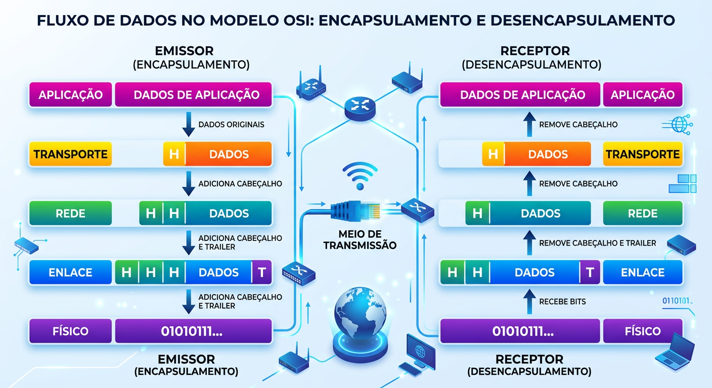
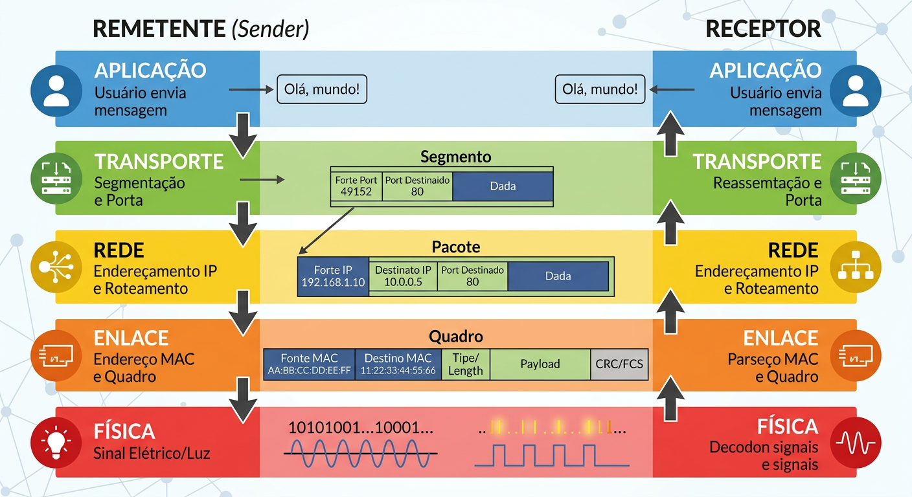
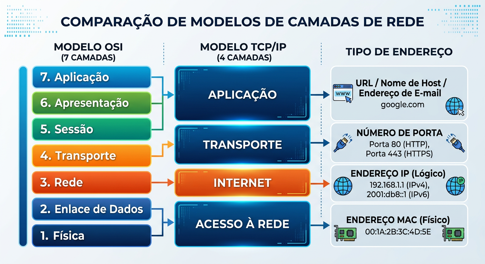
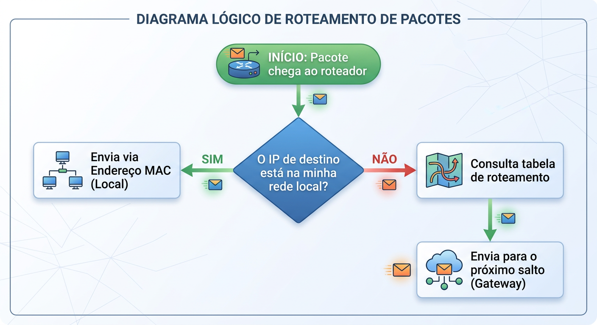

Analogia Postal
Para gerenciar a complexidade, usamos Camadas . Como enviar uma carta, você não planeja o voo do avião, apenas escreve e posta. O sistema divide o trabalho.
Como dispositivos ao redor do mundo se entendem em frações de segundo?
Clicar em um link parece simples. Porém, envolve uma complexidade técnica monumental entre fabricantes, sistemas operacionais e meios físicos variados.
Para gerenciar a complexidade, usamos Camadas . Como enviar uma carta, você não planeja o voo do avião, apenas escreve e posta. O sistema divide o trabalho.
Sistemas proprietários isolados, sem comunicação padronizada.
A ISO desenvolve o Modelo de Referência OSI.
Modelo conceitual fundamental para interconexão de sistemas abertos.
Par-a-par: Logicamente, cada camada do emissor "conversa" diretamente com a camada correspondente do receptor.
Encapsulamento: O dado original desce as camadas, ganhando cabeçalhos (headers) como bonecas matrioskas, até a transmissão física.

Da Aplicação (mensagem do usuário) descendo até a Física (sinal elétrico), cada estágio transforma os dados adicionando inteligência para o roteamento e entrega.

Modelo teórico e didático com 7 camadas. Define detalhadamente como a comunicação deve ocorrer, focando na separação rigorosa de funções.
O modelo prático que faz a internet real funcionar. Simplificado em 4 ou 5 camadas, focado no IP e TCP/UDP para roteamento e transporte.
Únicos no mundo, gravados na placa de rede. Movimentam o quadro dentro da rede local (LAN).
Mutáveis conforme a conexão. Permitem identificação global na Internet para o roteamento.
Números (ex: 80, 443) que garantem que o dado chegue ao programa correto (navegador vs e-mail).
Nomes amigáveis (URLs, e-mails) traduzidos para IPs pelo DNS para facilidade humana.

A correlação direta mostra como o endereço MAC, IP, Porta e URL se encaixam nas respectivas camadas de ambos os modelos.
O roteamento é baseado em perguntas simples e lógicas.
Se o destino está na mesma rede, usamos o MAC. Se está longe, consultamos a tabela de roteamento e enviamos pelo gateway.

O Modelo OSI e o TCP/IP sustentam cada bit de informação do mundo atual. Entender essas camadas é mapear o caminho para inovações como o 5G e a IoT.
"A complexidade da rede global é domada pela perfeita organização em camadas."